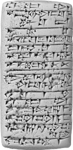

Billet en cours d’écriture
Depuis une dizaine d’années, je donne une formation « Citer ses sources » ouverte à tou.te.s à la Bibliothèque des lettres et sciences humaines de l’Université de Montréal. C’est l’une de mes formations préférées car cela parle de valeurs, de méthodes et surtout cela déconstruit le message traditionnel « il ne faut pas plagier » pour le remplacer par « pourquoi citer est existentiel pour la pensée humaine » (rien que ça). De plus, cela me permet d’exprimer pourquoi je pense que la citation est au coeur de nos métiers de la documentation et de l’information.
Un jour, je me suis posé la question : et si une personne qui assiste à la formation me demande à quand remonte la première citation, alors que pourrais-je lui répondre ? Alors je me suis mis sur la route de l’histoire de la citation. En voici une carte postale.
Où on débute par un petit bout d’information
Par où commencer lorsqu’on veut explorer les pratiques de citation ? On m’a souvent dit que le plus ancien texte littéraire connu était L’Épopée de Gilgamesh et que les Mésopotamiens avaient inventé l’écriture. Alors, pourquoi ne pas commencer par là ?
Ne connaissant pas grand-chose au sujet, j’ai fureté sur Internet et j’ai d’abord repéré un article particulièrement pédagogique de Szilvia Sövegjártó (notée Sz) 1. À partir de ce document et par « boule de neige2 », j’ai rassemblé un ensemble de sources tertiaires (entrées d’encyclopédies universtaires, Wikipédia, etc.), de sources secondaires (livres et articles sur le sujet) et mêmes des sources primaires (tablettes gravées, transcrites et parfois même traduite).
Voici une synthèse de ce que j’ai trouvé. Nous allons découvrir les premières traces de références dans :
les sceaux, premières marques de renvoi extra-textuel, associées aux notions de propriété d’un document et de protection personnelle ;
les tablettes contenant des listes d’inventaire d’autres tablettes de scribes, donc les premières références écrites à des oeuvres de l’histoire, puis d’autres types de listes ;
le passage de cultures orales à des cultures écrites, avec les premières compilations de textes et les premiers commentaires, avec la naissance de l’« auteur » et les premières attributions textuelles.
Introduction
Si les berceaux de l’humanité se trouvent en Afrique, alors les premières cours de maternelle de la vie sociale en groupes denses se trouvent probablement dans la région appelée le « Croissant fertile », c’est-à-dire la Mésopotamie vers -7000.
Cette région voit naître de nombreuses inventions sociales et technologiques : agriculture, irrigation, urbanisation, etc. Parmi celles-ci, il y a deux innovations relevant des technologies cognitives qui vont profondément transformer l’évolution de l’humanité : les sceaux et l’écriture. Car c’est dans le sillage de ces deux inventions qu’apparaissent les premières traces d’attributions.
Les sceaux : premiers marquages
Les premiers sceaux de l’histoire apparaissent vers le VIIe millénaire av. J.-C. (entre l’an -7000 et -6001), au cours d’une période nommée HassunaQ et sur les sites archéologiques de BouqrasQ (en Syrie) et de Tell es-SawwanQ (en Irak).
D’abord sous la forme de tampons, puis plus tard sous la forme de sceaux-cylindresQ, ces outils permettent de sceller des denrées pour identifier la propriété des biens en y apposant une « signature » avant de les entreposer dans un grenier commun. Souvent fabriqués à partir de pierres importées, ils sont parfois portés de manière ostentatoire afin de signaler le statut de leur propriétaire. Enfin, ces sceaux sont perçus comme des amulettes de protection magique, étendant la protection de la propriété à celle de la personne (contre les fausses couches, la magie noire, le démon de la maladie, etc.). DC118
Chaque sceau est constituée d’un ensemble de symboles qui sont sélectionnés et agencés pour représenter de manière abstraite une personne ou une institution. Ces caractéristiques vont se retrouver tout au long de l’histoire de la citation : une identité unique, nommée et matérialisée, inscrite dans un objet et référant à une entité externe à l’objet.
L’écriture : première fixation de l’information
Toujours en Mésopotamie, vers 3300 avant Jésus-Christ, des scribes sumériens se basent sur les caractères gravés sur les sceauxKnC pour inventer la technologie cognitive la plus connue de l’histoire humaine : l’écriture.
Elle semble apparaître pour répondre à un besoin comptables et administratif de contrôle de ressources. Elle permet de fixer des informations immatérielles, principalement des quantités associées à des biens matériels, sur des tablettes d’argile. Plus tard, elle est utilisée de manière littéraire.
Tablette + sceau = première référence de l’histoire
Pendant la période Uruk (-3500 à -3100), certaines tablettes d’écritures reçoivent la marque de sceaux-cylindres. Je considère que ce sont les premières références documentaires de l’histoire de l’écriture. En effet, en combinant ces deux technologies, nous avons désormais une information riche, encodée sur une tablette d’argile, associée avec une autre information qui, comme nous l’avons mentionné précédemment, fait une référence à une entité nommée qui existe en dehors du document.
Outre le marquage de la propriété, les sceaux sur les tablettes servent aussi de signatures pour des contrats, pour des traités et plus tard pour des lettres de correspondance. Certains types de documents sont plutôt scellés par les envoyeurs (reçus administratifs, lettres, ventes, cadeaux, etc.), tandis que d’autres le sont plutôt par les receveurs (prêts par exemple).DC113
Les listes
Vers 2500 av. J.-C., un nouveau genre littéraire dérivé des pratiques comptables apparaît : la liste. Il en existe de toutes sortes : listes de rois, listes de lieux, listes d’animaux, etc.
Inventaires de textes
Les inventaires de textes sont les premiers documents textuels avec des références à d’autres textes.
Le catalogue de Nibru de Ur III (N1)Q , datant de -2100 à -2000, semble être le plus ancien de cette catégorie. Il s’agit d’une liste d’entrées qui représentent des noms, des oeuvres et des objets. On pense que le scribe les possède ce qu’il liste ou bien qu’il les gère pour quelqu’un d’autre et qu’il enregistre de cette manière pour les contrôler. Ce type de document est commun dans la tradition scribale. Ce document en particulier pourrait être considéré comme le premier document de l’histoire qui mentionne un autre document. En fait, il liste même plusieurs autres documents de manière ordonnée. C’est l’ancêtre des catalogues et des bases de données actuelles.

{kind=link}
Dans le même genre et à la même époque, il y a aussi la tablette YBC3654 qui est un catalogue de chansons royalesSNK. Ces chansons sont censées être rédigées dans d’autres tablettes.
Dans ces listes, les oeuvres sont référencées grâce à leurs incipits, c’est à dire leur premier paragraphe ou leur première phrase. En effet, c’est une période où les documents n’ont pas encore de titre. L’incipit est utilisé comme titre et ainsi comme clé d’accès pour pointer vers un document. On pourrait dire que l’incipit est l’ancêtre des citations abrégées telles que nous les voyons de nos jours sous la forme (auteur-date) ou numérotées ou comme notes de bas de page. De plus, on peut considérer une liste d’incipits comme un quasi-ancêtre des bibliographies.
Cette technique n’est évidemment pas idéale car plusieurs oeuvres peuvent commencer de la même manière alors qu’elles sont des variantes. Malgré cela, les experts contemporains arrivent à retracer les références aux oeuvres correspondantes comme on le voit dans la translitération du catalogue de Nibru (N2) datant de la période babylonienne ancienneQ. Cela nous amène à inférer que les scribes de ces époques savaient immédiatement reconnaître les incipits les plus connus. [combien d’oeuvres majeures en circulation environ pour chaque époque?]
Listes de sagesses
Certaines listes commencent à devenir sémantiquement plus complexes avec l’apparition des listes de sagesses, c’est-à-dire des conseils spirituels et moraux. Les listes de sagesse font partie de l’histoire de l’humanité : les Dix Commandements, les Béatitudes, les commonplace books, le Petit Livre rouge, etc. Au même moment, les attributions autoriales de ces listes à des personnes deviennent aussi un enjeu.
Les Instructions de ShuruppakQ (-2500c) sont l’exemple typique de ces listes de sagesses. Ce serait le texte littéraire le plus ancien attribué à une personne. Ce texte, écrit en sumérien, est une compilation de courts proverbes anonymes d’origines diverses et assemblés par des scribes.
Tu ne dois pas maudire trop fortement car cela rebondira sur toi.
Tu ne dois pas faire un jugement quand tu as bu de la bière.
Les scribes font débuter cette compilation par une référence nommée au chef de famille Shuruppak qui donne crédit au texte, celui de son père et celui de son fils. Cette figure de style se rapproche de ce que l’on trouve dans les listes des rois.
Ces attributions nommées et ordonnées traduisent probablement une aspiration à une dimension historique, réelle, non mythique, de la liste de ShuruppakSz. Surtout, ces références sont immédiatement suivies par des intentions de citation. En effet, dans le texte Shuruppak insiste fortement et personnellement sur le fait qu’il faut absolument suivre ces instructions. Cette injonction est répétée cinq fois au début du texte, puis cinq fois au milieu du texte et encore cinq fois après selon la même formule.
De l’oralité à la textualité
Par la suite, d’autres listes d’instructions se sont développées. Selon les intentions éditoriales des scribes, elles étaient attribuées à des fermiers, à des dirigeants ou à des figures légendaires. Par exemple, lorsqu’elles étaient attribuées à un fermier (par exemple Farmer’s InstructionsQ), c’était dans le but d’exprimer une sagesse populaire commune. Tandis que si elles étaient attribuées à un dieu alors les proverbes avaient un rôle normatif dans la société (par exemple Instructions of Ur-NinurtaQ).Sz
Pas d’autorialité rigoureuse
Même dans la société babylonienne ancienne, l’identification des auteurs-rédacteurs n’était pas spécialement recherchée. C’est probablement parce que les textes étaient recopiés ou remémorés par des copistes qui faisaient parfois des modifications par rapport à l’original et donc participaient et se fondaient dans la chaîne de production du savoir. Dans ce contexte « La quête d’auteurs uniques et originaux ne faisaient pas trop de sens [ma trad.]» BL
En fait, tous les auteurs réels ou originaux de chacun des proverbes sont perdus, ainsi que les noms des scribes compilateurs. Même si elle a développé l’écrit, la culture scribale des sociétés sumériennes et akkadiennes se basait d’abord sur la transmission orale du savoir. La copie était anonyme et elle ne cherchait pas l’originalité. Ce n’est que vers -2000 que les scribes mentionnent parfois leurs noms dans le colophon3 des textes. Et encore, c’est probablement plus une mention de propriété que d’autorialité car ils ne précisent pas leurs rôles de copistes ou d’éditeursVdM.
Probablement pour donner un peu d’ordre au chaos des textes, les scribes ont donné des attributions occasionnelles à des figures légendaires ou historiques.Sz+FBR. On pourrait dire qu’outre l’incipit, les premières attributions à des auteurs étaient une technique embryonnaire de création de métadonnées. Un processus semblable pourrait avoir eu lieu dans la Chine ancienneHmZ.
Naissance de l’auteur attribué
Selon Van der ToornVdT, il y a trois types d’autorialité : l’autorialité honorifique, où l’auteur attribue le texte au commanditaire ou au mécenne de l’oeuvre; la pseudoépigraphie, où l’auteur attribue le texte à une figure notable du passé pour donner plus de crédit au texte; et l’autorialité attribuée.
Szilvia SövegjártóSz suggère que l’autorialité a débuté sous la forme d’autorité honorifique avant de se déplacer vers une reconnaissance des accomplissements individuels d’un auteur. Attribuer l’autorialité à un dirigeant a une certaine logique puisque cela ancre le texte dans le temps et l’espace de manière certaine, et il reconnaît la participation du dirigeant dans la commande de l’oeuvre et de son exécution. C’est seulement vers le premier millénaire avant J.-C. que l’idée d’attribution des textes littéraires devrait être faite aux savants et non pas aux dirigeants ou aux personnages historiques4. L’attribution à un auteur (attributed authorship) serait née dans la période Babylonienne ancienne du besoin de fixer dans le temps et l’espace une sélection de textes littéraires sumériens et de leur donner du contexte. De plus, à cette époque la production de documents s’étend à la sphère privée.
Steineck et SchwermannSnS discutent de la place de l’auteur, de sa construction, de son attribution. D’une manière plus générale, il semble que l’attribution à une personne savante de plus en plus proche de la production ou de l’éditorialisation du texte soit associée à l’apparition de notion d’individualité dans la société. La valeur de ce travail savant se trouvait dans son originalité, ou dans sa médiation par sélection, traduction, compilation par contextualisation.
Enheduana, une exceptionnelle
Pendant la période de l’empire akkadien (-2300), la prêtresse et princesse EnheduanaQ est une exception notable car plusieurs textes sumériens lui sont attribués. Certains la considèrent comme la première autrice de l’histoire. En effet, contraitement aux Instructions de Shurrupak qui était probablement un travail de scribes divers, il semble qu’elle ait pu participer activement à la rédaction des textes qui lui sont attribuésH&S. Parmi ces textes les plus connus, il y a The Exaltation of Innana et des Sumerian Temple Hymns, dont le Kesh Temple HymnQ.
Je n’ai pas trouvé de documents anciens qui citent explicitement une des oeuvres de Enheduana. Par contre, pendant la première dynastie de Babylone (-1880 à -1595), le Kesh Temple Hymn est intégré au programme de formation des scribes dans un ensemble de dix textes nommés The DecadQ. Ainsi, une première intention de mention d’une oeuvre en tant que tel (et non à un document d’inventaire) ait été l’incorporation dans un canon officiel de textes.
Canoniser pour sélectionner
M StolSto43+WmG47 a remarqué des correspondances dans les tablettes du Traité akkadien de diagnostics et pronostics médicauxQ , une compilation de -1100c d’une quarantaine de tablettes plus anciennes et éparses pouvant remonter au IIe millénaire. Ces correspondances renvoient à des tablettes plus anciennes à travers les mentions d’incipits. Cette compilation semble avoir été produite en réaction à des textes plus anciens qui ont été remaniés par le scribe Esagil-kīn-apliQ. Certaines tablettes contiennent la mention ša pī ummâni dans leur colophon, qui veut dire « D’après les anciens » et évoque une chaîne de transmission orale depuis des temps lointains.
Premiers commentaires
La première trace d’un commentaire d’un texte, et donc d’une mention d’une idée d’un texte dans un autre, date de -711. Il s’agit d’un commentaire religieux.
L’épopée de Gilgamesh
Datant d’environ -2100, les différents récits poétiques de Gilgamesh ont été compilé et édité dans une sorte de best of vers -1200 par le scribe Sîn-lēqi-unninni. Cette compilation est devenue la version « standard », l’Épopée de GilgameshQ , l’un des plus récits littéraires les plus anciens et les plus connus. Elle suit les aventures du roi Gilgamesh d’Uruk, un héros surhumain et un homme confronté à sa propre mortalité.
Graver pour être cité
On trouve un passage qui dit
Il a gravé sur une stèle de pierre tous ses hauts-faits [Tablette 1Q]
Ce passage souligne l’importance pour les Mésopotamiens de fixer un texte sur une pierre pour lui conférer non seulement valeur, pérennité et autorité mais aussi pour permettre que des informations futures puissent se baser sur elle.
En effet, le Code de Hammurabi, un texte de loi gravé dans la pierre, exposé publiquement et datant de -1750c a les mêmes modalités. Il est conçu comme une référence accessible pouvant d’être recopiée, invoquée, mentionnée ou citée. Une sorte d’étalon métrique pour le monde social.
Cela change des tablettes d’argiles!
Mise en abîme de l’audience
Le récit de L’Épopée joue avec cette fixation matérielle en mettant en scène sa propre lecture sous la forme d’une auto-référence littéraire :
Trouve le coffre à tablettes en cuivre,
ouvre le … de ses verrous de bronze,
défait l’attache de son loquet secret.
Prend et lit depuis les tablettes de lapis lazuli
comment Gilgamesh passa au travers de toutes ses épreuves. [Tablette 1Q]
Ce mécanisme littéraire puissant montre que le texte est capable de se référencer lui-même et de s’adresser directement à son lecteur en l’absorbant dans le récit. On peut voir que ces références textuelles riches et complexes ont attendues la forme littéraire du récit. Il est possible que la structure intrinsèque du récit en plusieurs niveaux ou selon différents points de vue semble offre un terrain particulièrement propice au jeu des références, des renvois et des échos textuels.
Inclusion d’un récit plus ancien dans le récit actuel
Parfois l’inclusion d’un récit antérieur est direct et explicite. Par exemple, la narration de l’épisode du Déluge (Tablette XIQ) par Utnapishtim est un récit antérieur enchâssé au sein de L’épopée de Gilgamesh.
Ce récit du Déluge a une fonction importante car il référence et explique une catastrophe fondatrice du passé. De plus, il est une mise en abîme littéraire en invitant à une réflexion sur la survie. Si l’homme ne peut être immortel, son histoire racontée oralement ou fixée dans un texte, elle, peut l’être. On retrouve cette sublimation de la peur de la mort par le récit glorieux dans d’autres cultures comme celle de Grèce antique par exemple.
Un récit synthétique avec mentions lacunaires d’épisodes connus
L’épopée de Gilgamesh est une condensation de récits textuels et oraux antérieurs, souvent évoqués sans être pleinement développés. Ces allusions laissent entendre que l’audience connaît déjà ces épisodes et qu’une simple mention suffit à les convoquer. Ainsi, certains récits détaillant les relations entre dieux et humains ne sont pas explicitement inclus. On pourrait définir ces ellipses comme des références implicites qui renvoient à une mythologie partagée.
L’ensemble de ces procédés de référence montre que L’Épopée de Gilgamesh fonctionne comme une tentative de fixation sélective d’un répertoire beaucoup plus vaste. Dans le contexte d’une culture largement orale qui teste des formes de stabilisation textuelle, elle présuppose une audience informée et dotée d’une mémoire culturelle communee. Ces différentes formes de références, incorporées dans un récit synthétique, sont des portes vers la culture mésopotamienne. Certaines portes nous sont invisibles et certaines sont fermées car nous sommes trop distant de ce passé et nous en avons perdu les clés.
À cet égard, elle peut être rapprochée des récits homériques qui évoquent des mythes sans les développer, ou encore de textes médiévaux faisant référence à la Bible ou aux légendes sans les expliciter entièrement.
Annexe : Ailleurs et avant
Dans l’Amérique centrale pré-colombienne, les sceaux tampons et les sceaux à rouler (sello) ont existé probablement dès -1500Q. Dans la Chine ancienne, les plus anciens sceaux tampons dateraient de la dynastie Shang (-1600 à -1046)Q.
Cependant, en étudiant les premières traces de références dans les civilisations naissantes, nous repérerons une absence, ou plutôt une présence sans trace explicite : ces références existent avant l’écriture. Elles font déjà partie de la vie sociale humaine. Elles habitent nos processus mentaux depuis longtemps. Elles vivent en nous.
Tout d’abord, il y a l’immense domaine des cultures orales de ces époques anciennes qui nous est très difficilement accessible. J’y reviendrai dans un prochain billet car c’est une question assez vaste.
De plus, de manière plus « matérielle », des objets spéciaux qui étaient arborés ou possédés ont probablement précédé les sceaux dans l’histoire de l’attribution. En effet, il est possible que ces objets avaient une fonction référentielle qui s’ajoutaient à ses fonctions utilitaires.
Les marquages corporels pourraient faire parti de ces traces anciennes. Par exemple, les scarifications et les tatouages anciens peuvent renvoyer à une référence au-delà de l’aspect esthétique (rite de passage, d’appartenance, de possession, d’identité ou de statut social). En Egypte, on a retrouvé des statuettes portant des marques de scarifications datant de -5000Q et des tatouages datant au moins de -3000 Q.
Références
DC : Collon, Dominiques. First impressions : cylinder seals in the ancient Near East 1988 . https://archive.org/details/firstimpressions0000coll/page/6/mode/2up
BL : Lion, Brigitte, ’ Literacy and Gender’, in Karen Radner, and Eleanor Robson (eds), The Oxford Handbook of Cuneiform Culture. 2011. Oxford Academic. https://doi.org/10.1093/oxfordhb/9780199557301.013.0005
FBR : Foster BR. Authorship in Cuneiform Literature. In: Berensmeyer I, Buelens G, Demoor M, eds. The Cambridge Handbook of Literary Authorship. Cambridge University Press; 2019:13-26. https://doi.org/10.1017/9781316717516.002
H&S : Halton, Charles et Saana Svärd, Women’s Writing of Ancient Mesopotamia : An Anthology of the Earliest Female Authors, Cambridge et New York, Cambridge University Press, 2018. https://doi.org/10.1017/9781107280328
HmZ : Hanmo Zhang. 2018: Authorship and Text-making in Early China. De Gruyter. https://www.jstor.org/stable/j.ctvbkk21j
KnC : Kelley K, Cartolano M, Ferrara S. Seals and signs: tracing the origins of writing in ancient South-west Asia. Antiquity. 2025;99(403):64-82. https://doi.org/10.15184/aqy.2024.165
SNK : Samuel Noah Kramer. 1942. “The Oldest Literary Catalogue: A Sumerian List of Literary Compositions Compiled about 2000 B. C.” Bulletin of the American Schools of Oriental Research 88: 10–19. https://doi.org/10.2307/1355474.
SnS : Steineck, Raji C. et Schwermann, Christian. 2014: Introduction. In: Schwermann, Christian et Steineck, Raji C. (dir.): That Wonderful Composite Called Author: Authorship in East Asian Literatures from the Beginnings to the Seventeenth Century. (East Asian Comparative Literature and Culture 4) Leiden – Boston, 1–29. https://doi.org/10.1163/9789004279421_002. Littérature comparée, libre accès, facile à lire.
Sto : Stol, M. 1991-1992. Diagnosis and Therapy in Babylonian Medicine. JEOL 32: 42-65.
Sz : Sövegjártó, Szilvia. 2022: Originators in the Old Babylonian Sumerian literary tradition. Hungarian Assyriological Review 3: 25–47. DOI: https://doi.org/10.52093/hara-202201-0. Assyriologie, libre accès, facile à lire.
VdM : Van De Mieroop, M. 2016: Philosophy before the Greeks: The Pursuit of Truth in Ancient Babylonia. Princeton – Oxford. https://doi.org/10.1515/978140087411
WmG : William McGrath, 2016, The Diagnostic Series SA.GIG: Ancient Innovations and Adaptations, MA thesis U Toronto. http://hdl.handle.net/1807/75359
Éléments Wikidata
Passerelles vers les sources
Pour retracer les sources par « boule de neige », vous pouvez consulter les éléments Wikidata, marqués Q. Sur ces pages, vous pouvez dérouler le menu References de valeurs qui contiennent des sources, ou utiliser les liens comme work available at URL (P953), ou descendre au bas de la page et visiter les pages Wikipédia dans différents espaces linguistiques (fr, en, de, it, etc.).
Éléments améliorés
Dans le cadre de ce billet, de nombreux éléments Wikidata ont été créés ou améliorés :
- Epic of Gilgamesh (Q8272)
- Decad (Q5248677)
- Kesh temple hymn (Q5195547)
- Song of the hoe (Q7561191)
- Hymn to Enlil (Q5956769)
- Hymn to Shulgi (Q137454320)
- Lipit-Estar A (Q137454335)
- Enki’s Journey to Nippur (Q137454373)
- Inana and Ebih (Q137454380)
- Nungal A (Q137454404)
- Gilgamesh and Huwawa (Q86724342)
- Ur III catalogue from Nibru (N1) (Q137969092)
- OB catalogue from Nibru (N2) (Q138013643)
- Instructions of Shuruppak (Q3823132)
- The Farmer’s Instructions (Q137438077)
- Ziusudra (Q206754)
- Shuruppak (Q138014416)
- Ubara-Tutu (Q4468530)
- Song of the hoe (Q7561191)
- Lipit-Estar A (Q137454335)
- Šulgi A (Q138013667)
- Lipit-Ishtar (Q1076870)
- Ur-Ninurta (Q2622811)
- Counsels of Wisdom (Q30681078)
- A balbale to Inana (Q137506645)
- Sumerian temple hymns (Q137506392)
- Hymn to Inana (Q137454369)
- The Exaltation of Inanna (Q105794259)
- A tigi to Inana (Q138010650)
- A hymn to Inana as Ninegala (Q138010641)
- Counsels of Wisdom (Q30681078)
- Cuneiform Tablet HS 1360 (Q119968827)
- OB catalogue in the Louvre (L) (Q138027342)
- roller seal (sello) (Q137505110); Asian seal (Q3850202); seal material (Q11409101); scarification (Q570784); African scarification (Q113485243); tattooing (Q43006).
- Traité akkadien de diagnostics et pronostics médicaux (Q138806113)
- Esagil-kin-apli (Q5396676)
Footnotes
Ces citations abrégées en exposant, comme Sz ou Sz33, sont une construction « maison » faites d’une combinaison d’initiales, parfois suivies d’un chiffre qui correspond à la page du document où se trouve l’information. Par exemple, Sz est la clé qui permet de trouver la référence de Szilvia Sövegjártó dans la bibliographie finale. Sz33 indique que l’information se trouve à la page 33 de cette référence. Cette technique est un mélange du style auteur-date (puisqu’on peut deviner la source par sa clé), du style numéroté (discret et donc n’encombrant pas la lecture) et du style note de bas de page/fin de document (exposant discret là aussi).↩︎
La technique de recherche de documents nommée snowballing consiste à extraire des informations-clés à partir d’un document pertinent : mots-clés sujets, bibliographies et citations, auteurs, revue, etc. Le document pertinent est parfois appelé la «perle» avec la même idée de faire grossir son ensemble de documents en le travaillant et en tournant autour… oui, les bibliothécaires sont des poètes.ses.↩︎
Colophon : les notes du scribe vers la fin du texte.↩︎
Dans Uruk List of Kings and Sages.↩︎